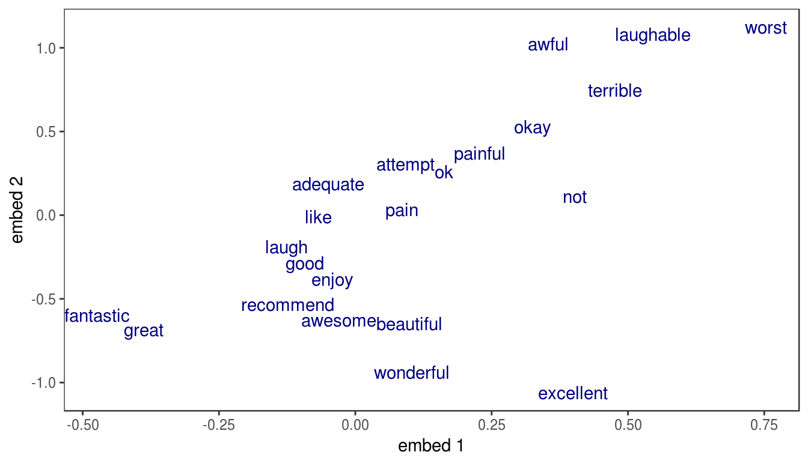

Demo the application of CNN for NLP task with varying length sequences using both padding and bucketing through custom iterator with MXNet R package
Example based on sentiment analysis on the IMDB data.
Load some packages
For this demo, the data preparation is performed by the script data_preprocessing_seq_to_one.R which involves the following steps:
Aggregate the buckets of samples and labels into a list
corpus_single_train.rds: no bucketing, all samples are padded/trimmed to 600 words.
cnn.symbol.factory <- function(seq_len,
input_size,
num_embed,
num_filters,
num_decode,
dropout,
ignore_label=-1) {
conv_params <- list(embed_weight=mx.symbol.Variable("embed_weight"),
conv1.weight = mx.symbol.Variable("conv1_weight"),
conv1.bias = mx.symbol.Variable("conv1_bias"),
conv2.weight = mx.symbol.Variable("conv2_weight"),
conv2.bias = mx.symbol.Variable("conv2_bias"),
conv3.weight = mx.symbol.Variable("conv3_weight"),
conv3.bias = mx.symbol.Variable("conv3_bias"),
fc1.weight = mx.symbol.Variable("fc1_weight"),
fc1.bias = mx.symbol.Variable("fc1_bias"),
fc_final.weight = mx.symbol.Variable("fc_final.weight"),
fc_final.bias = mx.symbol.Variable("fc_final.bias"))
# embeding layer
label <- mx.symbol.Variable("label")
data <- mx.symbol.Variable("data")
data_mask <- mx.symbol.Variable("data_mask")
data_mask_array <- mx.symbol.Variable("data_mask_array")
data_mask_array<- mx.symbol.BlockGrad(data_mask_array)
embed <- mx.symbol.Embedding(data=data, weight=conv_params$embed_weight, input_dim=input_size, output_dim=num_embed, name="embed")
embed <- mx.symbol.swapaxes(data = embed, dim1 = 1, dim2 = 2)
embed_expand <- mx.symbol.expand_dims(data=embed, axis=-1, name="embed_expand")
conv1<- mx.symbol.Convolution(data=embed_expand, weight=conv_params$conv1.weight, bias=conv_params$conv1.bias, kernel=c(1, 3), stride=c(1,1), pad=c(0,1), num_filter=8)
act1<- mx.symbol.Activation(data=conv1, act.type="relu", name="act1")
pool1<- mx.symbol.Pooling(data=act1, global.pool=F, pool.type="avg" , kernel=c(1,2), stride=c(1,2), pad=c(0,0), name="pool1")
conv2<- mx.symbol.Convolution(data=pool1, weight=conv_params$conv2.weight, bias=conv_params$conv2.bias, kernel=c(1,3), stride=c(1,1), pad=c(0,1), num_filter=16)
act2<- mx.symbol.Activation(data=conv2, act.type="relu", name="act2")
pool2<- mx.symbol.Pooling(data=act2, global.pool=F, pool.type="avg" , kernel=c(1,2), stride=c(1,2), pad=c(0,0), name="pool2")
conv3 <- mx.symbol.Convolution(data=pool2, weight=conv_params$conv3.weight,
bias=conv_params$conv3.bias, kernel=c(1, 3),
stride=c(1,1), pad=c(0,1), num_filter=32)
act3 <- mx.symbol.Activation(data=conv3, act.type="relu", name="act3")
pool3 <- mx.symbol.Pooling(data=act3, global.pool=T, pool.type="max", kernel=c(1,1), name="pool3")
flatten <- mx.symbol.Flatten(data=pool3, name="flatten")
# fc1 <- mx.symbol.FullyConnected(data=flatten, weight = conv_params$fc1.weight,
# bias=conv_params$fc1.bias, num.hidden=16, name="fc1")
# act_fc <- mx.symbol.Activation(data=fc1, act.type="relu", name="act_fc")
# dropout<- mx.symbol.Dropout(data=act_fc, p=dropout, name="drop")
fc_final<- mx.symbol.FullyConnected(data=flatten, weight=conv_params$fc_final.weight, bias=conv_params$fc_final.bias, num.hidden=2, name="fc_final")
# Removed the ignore label in softmax
loss <- mx.symbol.SoftmaxOutput(data = fc_final, label = label, name="loss")
return(loss)
}
num_decode=2
num_embed=2
num_filters=16
seq_len = 600
symbol_cnn <- cnn.symbol.factory(seq_len = seq_len, input_size = vocab,
num_embed = num_embed, num_filters = num_filters,
num_decode = num_decode, dropout = 0.5, ignore_label = -1)
graph.viz(symbol_cnn, shape=c(seq_len, batch.size), direction = "LR")devices <- mx.gpu()
initializer <- mx.init.Xavier(rnd_type = "gaussian", factor_type = "avg", magnitude = 2.5)
optimizer <- mx.opt.create("rmsprop", learning.rate = 1e-3, gamma1 = 0.95, gamma2 = 0.92,
wd = 1e-4, clip_gradient = 5, rescale.grad=1/batch.size)
logger <- mx.metric.logger()
epoch.end.callback <- mx.callback.log.train.metric(period = 1, logger = logger)
batch.end.callback <- mx.callback.log.train.metric(period = 50)
system.time(
model <- mx.model.buckets(symbol = symbol_cnn,
train.data = train.data.single, eval.data = eval.data.single,
num.round = 5, ctx = devices, verbose = FALSE,
metric = mx.metric.accuracy, optimizer = optimizer,
initializer = initializer,
batch.end.callback = batch.end.callback,
epoch.end.callback = epoch.end.callback)
)## user system elapsed
## 42.55 107.08 46.47mx.model.save(model, prefix = "../models/model_cnn_classif_single", iteration = 1)Word representation can be visualized by looking at the assigned weights in any of the embedding dimensions. Here, we look simultaneously at the two embeddings learnt in the LSTM model.

Since the model attempts to predict the sentiment, it’s no surprise that the 2 dimensions into which each word is projected appear correlated with words’ polarity. Positive words are associated with lower values along the first embedding (great, excellent), while the most negative words appear at the far right (terrible, worst).
ctx <- mx.cpu(0)
batch.size <- 64
corpus_single_test <- readRDS(file = "../data/corpus_single_test.rds")
test.data <- mx.io.bucket.iter(buckets = corpus_single_test$buckets, batch.size = batch.size,
data.mask.element = 0, shuffle = FALSE)mx.symbol.bind = mxnet:::mx.symbol.bind
mx.nd.arraypacker = mxnet:::mx.nd.arraypacker
infer <- mx.infer.rnn(infer.data = test.data, model = model, ctx = ctx)
pred_raw <- t(as.array(infer))
pred <- max.col(pred_raw, tie = "first") - 1
label <- unlist(lapply(corpus_single_test$buckets, function(x) x$label))
acc <- sum(label == pred)/length(label)
roc <- roc(predictions = pred_raw[, 2], labels = factor(label))
auc <- auc(roc)Accuracy: 85.2%
AUC: 0.931